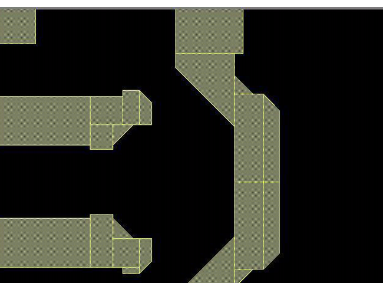

The following
illustrates an example VSB11 fracture operation.
/////////////////////////////////////////////////////////////////////////
// input SVRF file
/////////////////////////////////////////////////////////////////////////
LAYOUT SYSTEM GDSII
LAYOUT PATH "test.gds"
LAYOUT PRIMARY "*"
PRECISION 1000
RESOLUTION 1
DRC MAXIMUM RESULTS ALL
DRC RESULTS DATABASE "test_dummy.gds" GDSII PSEUDO
DRC SUMMARY REPORT "/dev/null"
LAYER poly 4
VSB11_FRACTURE { FRACTURE NUFLARE POLY FILE [
magnify 4
chip_directory "./chip"
version 11
small_value 0.1 //conversion units: 100nm/1.25 = 80
max_skew_approximation_error 0.01
]}
/////////////////////////////////////////////////////////////////////////
// listing of ./chip directroy
/////////////////////////////////////////////////////////////////////////
total 1808
drwxr-xr-x 2 samplet ae 512 Oct 14 11:29 .
drwxr-xr-x 3 samplet ae 512 Oct 14 11:44 ..
-rw-r--r-- 1 samplet ae 936 Oct 14 11:29 chip.cnf
-rwxr-xr-x 1 samplet ae 204124 Oct 14 11:28 common.chp
-rwxr-xr-x 1 samplet ae 22820 Oct 14 11:28 frame.1
-rwxr-xr-x 1 samplet ae 40724 Oct 14 11:28 frame.2
-rwxr-xr-x 1 samplet ae 59644 Oct 14 11:28 frame.3
-rwxr-xr-x 1 samplet ae 96808 Oct 14 11:28 frame.4
-rwxr-xr-x 1 samplet ae 147600 Oct 14 11:28 frame.5
-rwxr-xr-x 1 samplet ae 202436 Oct 14 11:28 frame.6
-rwxr-xr-x 1 samplet ae 86920 Oct 14 11:28 frame.7
-rwxr-xr-x 1 samplet ae 23400 Oct 14 11:28 frame.8
/////////////////////////////////////////////////////////////////////////
// content of chip/chip.cnf file
/////////////////////////////////////////////////////////////////////////
Conversion.System : "Calibre v9.3_4.4 (pre-production) Fri Jun 27
14:10:41 PDT 2003"
Conversion.machine : "jjj"
Conversion.machine.OS : "SunOS"
Conversion.machine.ID : "5.8 Generic_108528-12 sun4u"
Conversion.AddressUnit : "1.25nm"
Chip.Name : "chip"
Frame.Width : 819200
Cell.maxWidth : 102400
Cell.maxHeight : 819200
Cell.subField.size : 51200
Cell.subField.margin : 200
Cell.translate.x : -200
Cell.translate.y : -200
Pattern.arrayCompression : ON
Pattern.Compression : ON
Pattern.Slit.width : 0
Pattern.Set : 1
Common.maxData : 67108864
Frame.maxData : 67108864
// Common.bdeMaxData : 67108864
// Frame.bdeMaxData : 67108864
// MaxSkewAppoximationError : 8
// Chip.Directory : "./chip"
// small_value : 80
Chip.Size.x : 6382400
Chip.Size.y : 6383232
Chip.Frames : 8
Frame.8.Width : 648832
VSB11 Output
Figure 1. Fractured Data